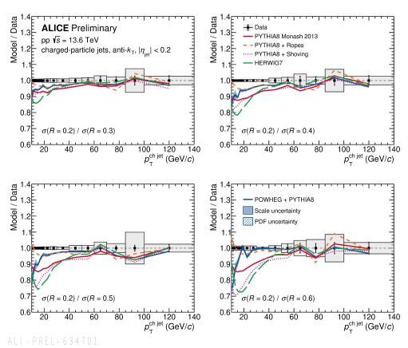

Primary analyzer of the first ALICE Run 3 inclusive charged-particle jet measurement in pp at √s = 13.6 TeV.
Regular speaker in the ALICE jet working group since 2023. Doctoral work centers on the R-dependent cross-section ratio — ALICE Preliminary, presented on behalf of ALICE at EPS-HEP 2025 as the PWG-JE merge talk.

Bias-robust observables in O+O and Pb+Pb.
Radial observables make selection bias directly testable; photon tagging provides a cleaner recoil probe; together they probe medium modification and medium response in O+O and Pb+Pb.
O²Physics framework contributions.
I implemented the Run 3 charged-jet cross-section normalization from the ALICE TVX visible cross section, now adopted across four Run 3 charged-jet analyses in the group. I also derived the pT-dependent track momentum-resolution smearing profile used in the Run 3 charged-jet systematics. Contributor to ALICE O²Physics since 2023 — jet-finding and response-matrix tasks, systematic-uncertainty pipelines, particle-level cross-section normalization, and shared track-smearing tools. → full account
Co-mentor of the MSc main analyzer on the ALICE Run 3 O+O charged-jet measurement (SKKU, 2025–present); co-author with W. Ham on the corresponding PWG-JE Analysis Note. Co-organizer and instructor of the KoALICE O²Physics Tutorial (SKKU, January 2024) — a two-day Run 3 analysis-framework tutorial for ~22 Korean ALICE participants. Regular speaker at ALICE PWG-JE meetings since 2023.
Classifier performance at
fixed working points.
Since summer 2026 I have been running a calibration-transfer study on the public sPHENIX TPCpp-10M spacepoint benchmark and the released FM4NPP backbones: classifiers evaluated at fixed working points under a signal-loss budget, differentially in occupancy. A working point calibrated on p+p is exceeded by a factor of roughly thirty at Au+Au-like density. Personal study, not a collaboration deliverable. Data and model checkpoints are public — details.
Path to thesis.
(co-organizer, instructor)
PWG-JE merge talk
Applying for 2027 postdoc positions.
Letters from Prof. Beomkyu Kim (SKKU, advisor), Dr. Jaime Norman (Liverpool, ALICE jets), and Prof. Sanghoon Lim (Yonsei, sPHENIX/ePIC) on request. For postdoc inquiries — jbae@cern.ch.